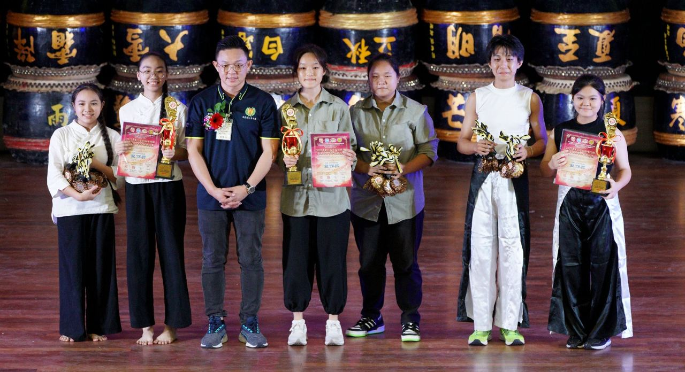
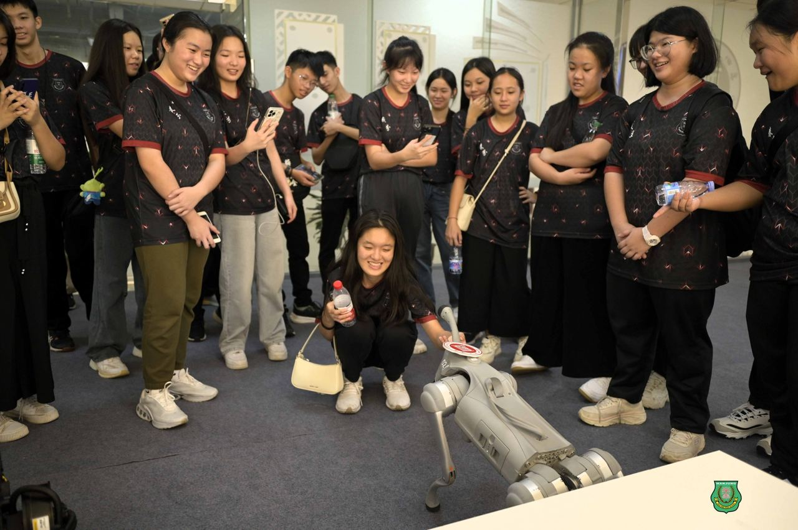
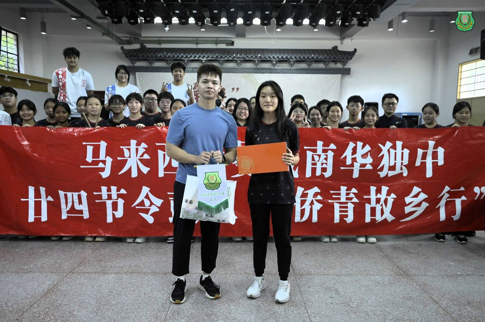
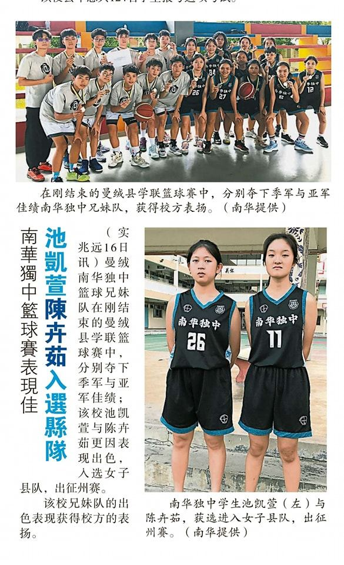

【90年风雨兼程 育见百年@菁莪风采】
【90年风雨兼程 育见百年@菁莪风采】
2025毕业生 池凯萱
从篮球县手到统考 9A 佳绩
池凯萱：运动教会我坚韧；学习我从不轻言放弃；
节令鼓是学校给我踏上学习成为领袖的第一步
南华独中 2025 年高三统考成绩单上，池凯萱以 9A 1B 的卓越成绩，成为本校今届最亮眼的优异生。然而，若你只看到成绩单上的”A”，你便读不懂真正的池凯萱。
她曾是冲锋陷阵的篮球县手，是掌控雷霆节奏的 24 节令鼓主席，也是带领高三全体筹办”季逅”毕业展的筹委会主席。在外界眼中，这是标准的”文武双全”；但在池凯萱眼中，这一切的成就，不过是她在无数次”打怪”升级中，学会了两件事：坚韧与取舍。
在开学典礼上，池凯萱感谢校方让她以“统考优异生代表”的身份上台分享，然后9A 1B其实更像是为了她记住“距离完美还差那么一步”。池凯萱回忆成绩揭晓后马上收到来自众人的恭贺，自己的第一反应并非狂喜，而是对那唯一的”B”感到愧疚。”我一直觉得自己会擦边过线拿 A2，然而7个A1也难掩羞愧 ”我确实有在英文科目上努力了，感觉对不起老师。”
这份对完美的执着，或许源自于她运动员的底色。在竞技场上，差一分就是输；在考场上，她同样用高标准审视自己。池凯萱对于“坚韧”的诠释是：运动员没有说”放弃”的权利
很多人认为活跃于社团会影响学业，但池凯萱用亲身经历打破了这个迷思。她认为，运动员与社团人最强大的优势在于”坚韧”。”因为我们训练辛苦，但是从不敢说放弃，不然就会被教练淘汰。这种磨练了身心意志的经历，让我在读书遇到难题时，也不会轻易说‘看不懂就不学了’。”
池凯萱并非天生的谦逊者。采访中，当她听见“你如何培养这种‘输得起’的心态？”陷入沉思片刻的她分享了小学六年级的惨痛教训：曾经自大地在赛前过度自信甚至在车上预言”包赢”最终却惨败。那一次教训让她深刻反省了自负的代价。”所以我到现在也不喜欢别人叫我学霸，因为每当自己见识到更多的时候，就会发现人外有人，天外有天不是说说而已，而他们都还在谦虚地学着，我更加懂得自己的渺小和不足。”
这种心态的成熟，也体现在她对”领袖”的理解上。从一个较真的人，她学会了”温和化解决问题”，甚至体悟到”带着面具微笑有时候会比脱下面具大大咧咧好用多了”。这不是虚伪，而是一种为了顾全大局而修炼出的社会情商（EQ）。
好多人都认为池凯萱“文武双全”，应该不需要依靠别人，自己就能解决事情了吧，但她恰好有不同的做法，因为强大不代表需要硬撑。池凯萱坦言，高一高二时因训练在白天，尚能平衡；但到了高三，面对微积分的难度与统考压力，她做出了关键决定：”我选择将节令鼓交给后人，实实在在放手。”
开学典礼上，池凯萱给学弟妹的建议非常务实：”你必须先明确自己的目标，但如果你选两者（学业与活动），就要接受可能两边都做得不够满意的结果。” 懂得在关键时刻做减法，恰恰是她能攻下 9A 的战略智慧。
作为第 51 届毕业生，池凯萱对即将迎来 90 周年的母校有着独特的期许。她期待母校能尽早打破外界对”独中需要付学费”的刻板印象，让大众明白”我们的优势在哪里”，为何这份教育物超所值 。而对于自己，褪去县手与二十四节令鼓的战袍与学霸光环，她最希望被记住的标签，竟然是最朴素的三个字——”开心果”。追问下去，原来她是指无论是学习、学会团体还是成绩，她都是希望自己的努力能够为大家带来开心，那就是自己成为“开心果”的动力，并勉励学弟妹”今天的我或许很快就被你超越，只要你从现在开始起选定方向并且坚毅地走下去。”
池凯萱在接受采访过程中，总是让人留下自信却不会产生距离感或隔阂，相信那份从容是来自于她真心相信自己取得成就的方法是可复制、可套用以及可参考，于是真心交付给在座的每位学弟学妹。池凯萱的成长历程，正是一个南华孩子如何在汗水与泪水中，学会了对自己负责、对团队温柔、对目标坚定的成人礼。



